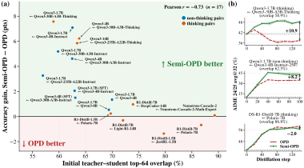

A tutor grading a weak student's essays line by line. If the student keeps rewriting and each draft wanders further from anything the tutor would write, the tutor's red ink stops making sense. Semi-OPD keeps the student's first drafts and has the tutor mark them once, then the student studies those marked drafts over and over.
실력이 아직 부족한 학생의 글을 선생님이 한 줄씩 첨삭한다고 하자. 학생이 계속 다시 쓰면서 원고가 선생님이라면 절대 안 쓸 방향으로 흘러가면, 빨간 펜 첨삭도 점점 의미를 잃는다. Semi-OPD는 학생의 첫 원고를 그대로 두고 선생님이 한 번만 첨삭한 뒤, 학생이 그 첨삭본을 되풀이해 공부하게 한다.
How it works: same loss, frozen data작동 방식은 같은 손실, 고정된 데이터
Only the rollout source changes; the loss and the per-step student log-probs stay live. So the signal still moves as the student learns, but the expensive parts run once.
바뀌는 것은 답안의 출처뿐이고, 손실과 매 단계 학생 로그확률 계산은 그대로 살아 있다. 그래서 학생이 배우는 만큼 신호는 계속 바뀌지만, 비싼 단계는 한 번만 돈다.
- Measure overlap first.먼저 겹침 비율을 잰다.Compare student and teacher top-64 tokens on the initial rollouts; low overlap points to Semi-OPD.초기 답안에서 학생과 교사의 상위 64개 토큰을 비교한다. 겹침이 낮으면 Semi-OPD 쪽이다.
- Cache rollouts and teacher log-probs.답안과 교사 로그확률을 저장한다.Each phase uses the whole cluster instead of sharing GPUs between generation, teacher, and trainer.생성, 교사, 학습이 GPU를 나눠 쓰지 않고 단계마다 클러스터 전체를 쓴다.
- Train on full trajectories.답안 전체로 학습한다.Truncating to the first quarter hurts, so every reasoning stage stays supervised.앞 1/4만 남기면 성능이 떨어지므로 추론의 모든 단계를 감독한다.
Key idea: OPD needs an aligned pair핵심은 OPD에 잘 맞는 쌍이 따로 있다는 것
The lower the starting overlap, the more Semi-OPD wins; only above roughly 70% overlap does OPD match or edge ahead. Misaligned students drift off the teacher's distribution as their rollouts grow.
시작 겹침이 낮을수록 Semi-OPD가 더 크게 이기고, 겹침이 대략 70%를 넘을 때만 OPD가 비슷하거나 조금 앞선다. 교사와 안 맞는 학생은 답이 길어질수록 교사 분포에서 멀어지기 때문이다.

Results: simplest variant, best score가장 단순한 변형이 가장 높은 점수
On a low-overlap pair, Semi-OPD beats every recent OPD fix. It needs no truncation, teacher intervention, or SFT warm start.
겹침이 낮은 쌍에서 Semi-OPD는 최근 나온 OPD 개선안을 모두 이긴다. 답안 자르기, 교사 개입, SFT 예열 같은 장치가 필요 없다.
The advantage shrinks to zero once teacher and student already agree. At 89% overlap, all methods land within a point of the teacher.
교사와 학생이 이미 비슷하면 이점은 사라진다. 겹침 89%에서는 모든 방법이 교사와 1점 안쪽에 모인다.
| Pair (overlap) | Teacher | OPD | Best variant | Semi-OPD |
|---|---|---|---|---|
| Qwen3-1.7B ← 4B-Instruct (62.5%) | 47.5 | 26.2 | 32.7 | 39.8 |
| Qwen3-4B ← 30B-A3B-Instruct (62.5%) | 62.1 | 44.9 | 52.5 | 57.4 |
| NM-Cascade-2-30B-A3B ← Math-Expert (89.3%) | 74.4 | 74.1 | 74.8 | 74.1 |
Before running OPD on a small student, measure its top-k overlap with the teacher on a few rollouts. If it sits near 60%, a frozen first-pass rollout set is cheaper and likely better than chasing the student online.작은 학생에 OPD를 돌리기 전에 답안 몇 개로 교사와의 상위 k 토큰 겹침부터 재자. 60% 근처라면 학생을 계속 따라가며 생성하는 것보다 처음 답안을 고정해 쓰는 편이 싸고 성능도 나을 가능성이 크다.
All training is on one math dataset with math benchmarks plus HumanEval, and Semi-OPD fails from a base student whose first rollouts are too weak. The overlap threshold is read off a scatter plot, not a tested decision rule.학습은 수학 데이터셋 하나로만 했고 평가는 수학 벤치마크와 HumanEval뿐이다. 첫 답안이 너무 약한 베이스 학생에서는 Semi-OPD가 OPD에 진다. 겹침 기준선도 산점도에서 읽어 낸 것이지 따로 검증한 판단 규칙은 아니다.